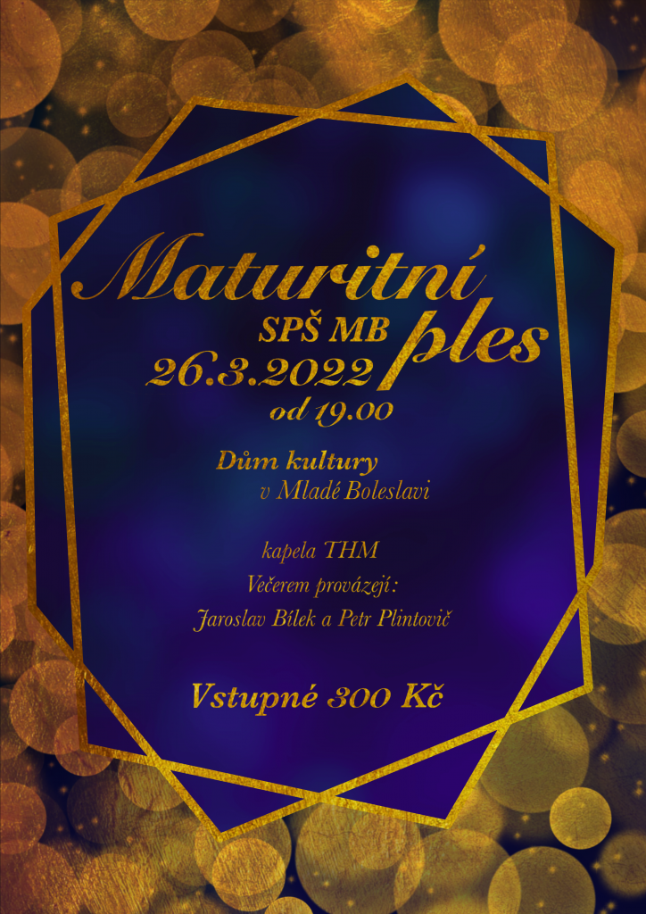

Duležitá sdělení
Srdečně Vás zveme na Maturitní ples Střední průmyslové školy Mladá Boleslav
7.3.2022 Věra Svárovská
Informace k prodeji lístků na sekretariátu školy.
NABÍDKA ZAMĚSTNÁNÍ
29.11.2021 Věra SvárovskáStřední průmyslová škola přijme do školní jídelny pomocnou sílu do kuchyně.
Nástup možný ihned.
Kontakt: +420 732 654 963
Informace o testování žáků
21.11.2021 Václav BohataPočínaje dnem 22.11.2021 bude každé pondělí ráno probíhat testování žáků antigenními testy. Testování se netýká očkovaných žáků, dále žáků, kteří v posledních 180 dnech prodělali onemocnění covid-19, případně žáků, kteří doloží negativní výsledek testu provedeného v odběrovém místě (ne starší 24 hodin pro antigenní test a 72 hodin pro PCR test).
» Všechy informace najdete v tomto dokumentu.V případě pozitivního výsledku testu bude muset žák opustit školu. Neplnoletí žáci pouze v doprovodu rodičů nebo na základě jejich souhlasu. Doporučuji tedy rodičům neplnoletých testovaných žáků, pokud nebudou mít možnost nebo čas do školy dojít, aby písemný souhlas s opuštěním školy sepsali dopředu a dali ho svému dítěti s sebou do školy.
Ing. Václav Bohata, ředitel školy
COVID-19 – aktuální informace
2.11.2021 Václav BohataV posledních dnech i na naší škole narůstá počet COVID-19 pozitivně testovaných žáků i učitelů. Všechny důležité informace byly a jsou zasílány žákům i rodičům e-mailem a zprávami ve Škole on Line. Intenzivně spolupracujeme s hygienickou stanicí, pomáháme s trasováním, řešíme neustálé změny rozvrhu a suplování. Situace se mění z hodiny na hodinu. Snažíme se zachovat výuku v nejvyšší možné míře, distanční výuka v kombinaci s klasickou výukou v současné situaci prakticky není možná.
Ve vedení školy jsme už na hranici svých možností, na četné otázky už nejsme schopni odpovídat. Všechny informace a odpovědi na časté otázky jsem již poslal všem rodičům i žákům.
Děkuji za pochopení.
Ing. Václav Bohata, ředitel školy
Jsme na Facebooku
SPŠ Mladá BoleslavStáž v zahraničí
V rámci vzdělávacího programu Erasmus+ absolvují vybraní studenti zahraniční stáž v Anglii nebo v Irsku. Stáži předchází přípravné hodiny angličtiny. Třítýdenní pobyt je plně hrazen z prostředků projektu.
Více o ErasmuZřizovatel školy
Střední průmyslová škola, Mladá Boleslav, Havlíčkova 456 je příspěvková organizace zřizovaná Středočeským krajem.